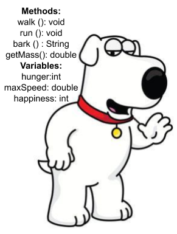

Everything in java is defined as an object, and thus, everything is implemented by sending messages to or from objects, these objects can be manipulated in different ways in order to achieve a set action or goal. This differs from other procedural languages because procedural languages run from start to finish until it reaches the end of the program, Object Oriented Languages only need an instance of the class (an Object). Please note, an object is an idea separate from concrete details of a programming language. Hopefully you can get an idea of OOP, and how it functions.
Objects are created from templates, these templates or blueprints come in the form of classes. Classes implement objects, and in fact an object is a single instance of the class. To create this instance we need a constructor. A constructor is just a special type of method that has the same name as the class, has no return type and is automatically created for you if its not in your code. If you overload a constructor different objects with different parameters can be initialized. You should also know that Object Oriented Programs have instance variables that are attributes and methods that represent a behavior or action — these are the major pillars of OOP and we will get more in depth in the following sections.
As previously stated, methods are behaviours, and have many features. Firstly, protecting methods is one of the things a programmer must be concerned about. A programmer can use ‘access specifiers’: a) public - available to everyone b) private - can only be used in the class c) protected - can only be used in the package or folder. Access specifiers are important because a programmer wants to be able to control the flow of data from one place to another. This is when Mutators and Accessors came into fruition. They are used to move data from one class to another and they do just as their names suggest. An accessor simply returns a variable, without changing it. And a mutator changes an instance variable. Simple, but it has a special name — encapsulation. By using Mutators and Accessors we can encapsulate data and makes sure it doesn't go to the wrong places.